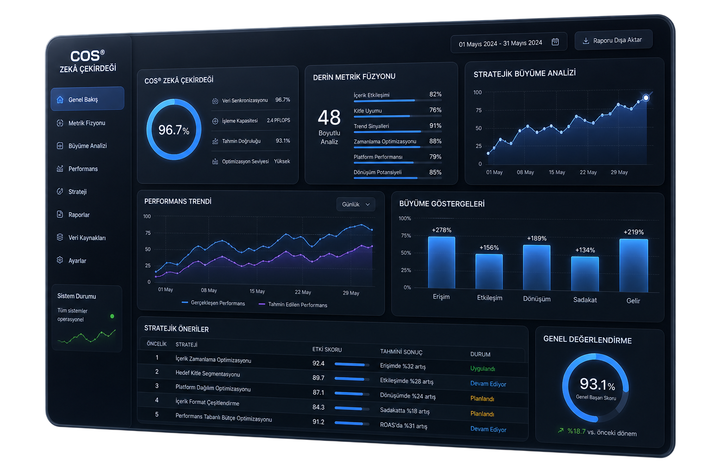

Belirsizliğe yer yok. COS® altyapısı ile sosyal medya dinamiklerini büyüme odaklı birer finansal varlığa dönüştürüyoruz.

Uluslararası veri işleme tecrübemizi, Türkiye pazarının özgün dinamikleriyle birleştirdik. Global teknolojiyi yerel içerik ekosistemi için %100 optimize ederek yüksek güven inşa ediyoruz.
Makine öğrenmesi modelleri ile hesap büyüme projeksiyonlarını kesin verilerle simüle edin.
Platformlar arası sinyalleri tek bir merkezden eş zamanlı olarak takip edin.
Pazar payınızı korumak için rakiplerin stratejik hamlelerini anında deşifre edin.
Sentiment analizi, trend kümeleme ve çok daha fazla veri katmanı.
Duyguları değil, algoritmanın matematiksel beklentilerini rasyonel metriklerle karşılar.
Yatırımınızın (ROI) sonucunu yüksek doğrulukla modelleyerek bütçe riskini ortadan kaldırır.
Geçici viral trendler yerine uzun vadeli ve ölçeklenebilir bir büyüme yapısı inşa eder.
Rakiplerinizin "deneme-yanılma" yaptığı noktada sizin elinizde net bir yol haritası olur.
COS (Creator Optimization System), binlerce veri noktasını çaprazlayarak size sadece durumu raporlamaz; büyümeniz için atmanız gereken bir sonraki stratejik adımı tanımlar.
Sistem mimarisi, tescilli algoritmalar ve operasyonel akışlar; IP güvenliği politikalarımız gereği yalnızca yetkilendirilmiş partnerlerimize açılır.
Bulut altyapımız Cloudflare Enterprise seviyesinde korunmaktadır.
Ölçeğinize uygun profesyonel veri yönetimi